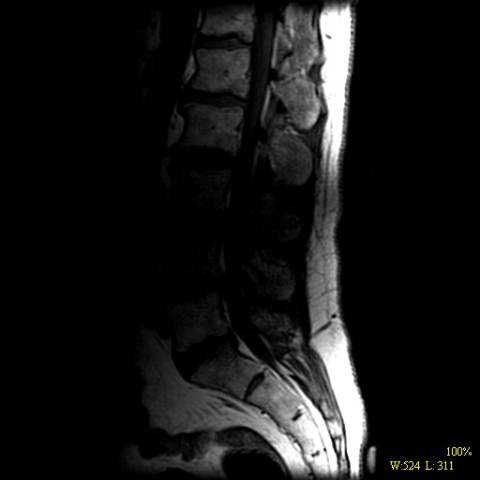
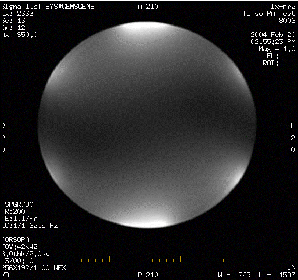
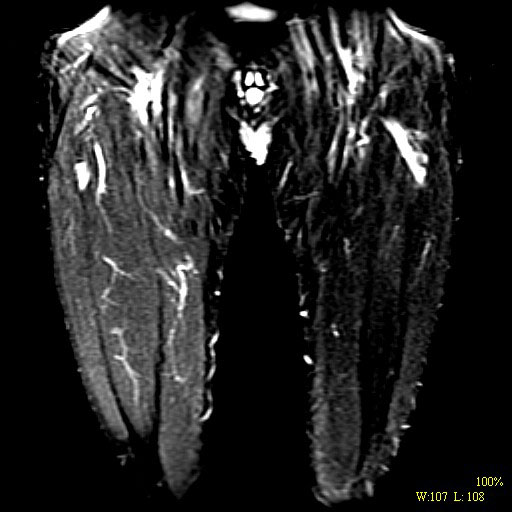
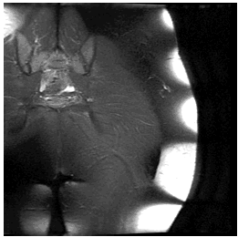

Click on image to view successful solution for each particular problem.
|
FAT SAT Shading |
Operator Error: Wrong Coils Off |
Operator Error: C-Spine |
|
 |
 |
 |
|
Quick Disconnect Connection |
Local Intensity Shift Artifact (LISA) |
Failed Y SGA |
|
 |
||
|
Bite Marks - FAT SAT |